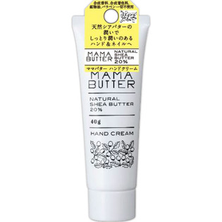

返回列表
产品名称：ママバター ハンドクリーム

ビーバイイー ママバター ハンドクリーム ４０Ｇ
メーカー ビーバイイー
JANコード 4560278233327
商品の特徴
爪先までさらりとなじみ、べたつかないのに、潤いが持続します。手だけでなく爪、爪周りのケアにもお使い頂けます。
成分・分量
＜成分＞ 水、シア脂、水添ナタネ油アルコール、グリセリン、パルミチン酸セチル、ステアリン酸、ステアリン酸グリセリル、トコフェロール、アルギニン、カプリリルグリコール、PEG-20ソルビタンココエート、フェノキシエタノール
用法及び用量
適量を手肌になじませてください。ひじやかかとにもお使い頂けます。